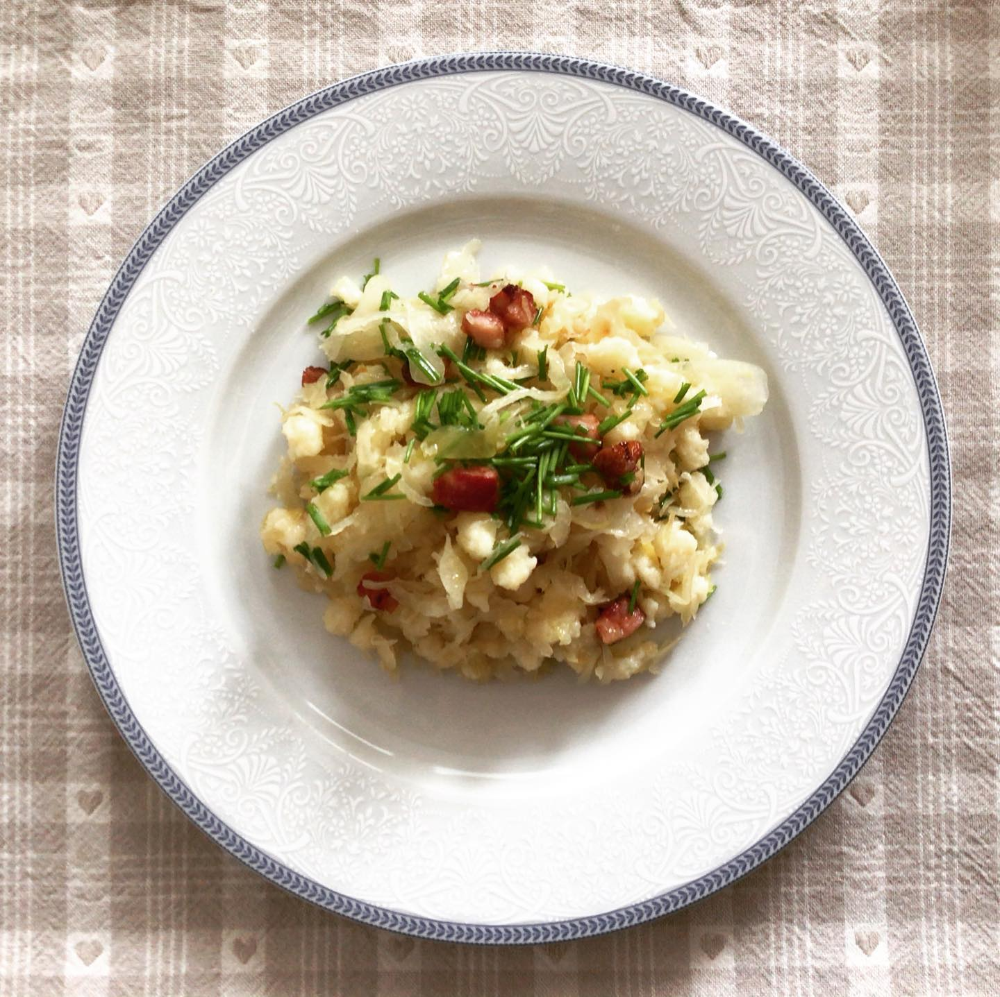

Strapačky s kapustou podľa @laeckerei_ — Normy Jedál
#dumplings with #sourcabbage 🥬 #sauerkraut #strapackyskapustou #slovakcousine #slovakisheküche @thunporcelain (Fermented cabbage is a good combination of #prebiotics i.e. #fiber and #probiotics i.e. #friendlybacteria. It contains #vitaminec #vitaminek2 boosting endurance #vitamineu #lacticacid increasing #metabolism #immunity and #mood.)